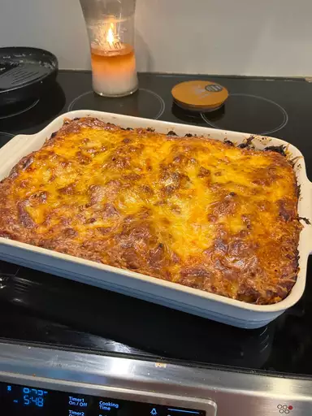

Lasagna Recipe
Go Back

Best Lasagna in za warudo
trust me bro
ingredients:
- meat
- onion and garlic
- tomatoes
- sugar
- cheeses
- egg
steps:
- Make the meat sauce.
- Cook the noodles.
- Make the ricotta mixture.
- Layer the lasagna according to the recipe instructions.
- Cover with foil and bake.
- Let the lasagna rest before serving.